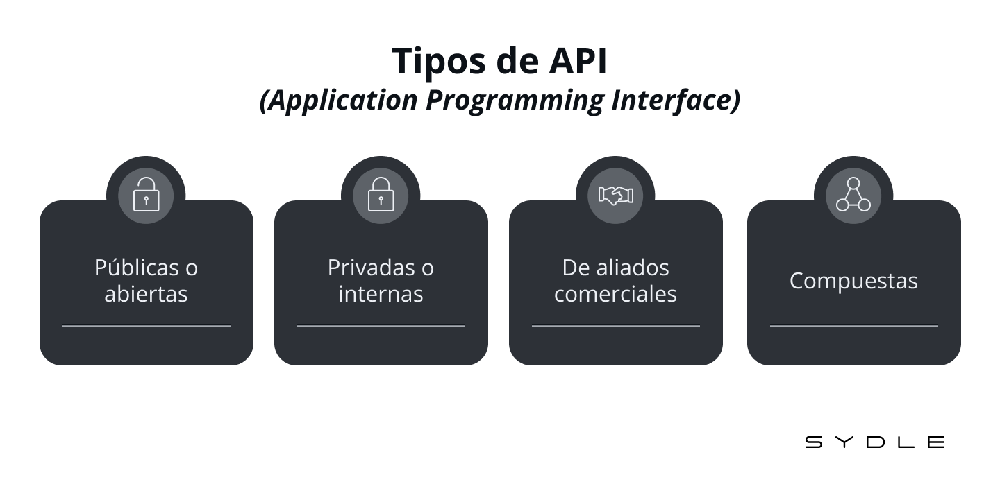

Una API (Application Programming Interface), o en español Interfaz de Programación de Aplicaciones, es un conjunto de definiciones y protocolos que permite que diferentes aplicaciones o sistemas se comuniquen entre sí. Es una herramienta clave en el desarrollo de software, ya que facilita la integración y el intercambio de datos entre servicios o componentes.
Características principales:
Interfaz estándar: Define reglas claras para que dos sistemas interactúen, como qué datos se pueden enviar, recibir y cómo debe hacerse.
Independencia del sistema: Una API permite que aplicaciones escritas en diferentes lenguajes de programación o que corren en distintas plataformas trabajen juntas
Seguridad: Muchas APIs requieren autenticación para garantizar que solo los usuarios o aplicaciones autorizados puedan acceder a sus servicios.
Tipos de APIs:
APIs de REST:
Basadas en el protocolo HTTP.
Utilizan métodos como GET, POST, PUT, y DELETE.
Son muy populares por ser ligeras y fáciles de usar.
APIs GraphQL:
Permiten consultar exactamente los datos necesarios, optimizando el rendimiento.
Más flexibles que REST o SOAP.
APIs WebSocket:
Proveen comunicación bidireccional en tiempo real.
Se usan para aplicaciones como chats o transmisiones en vivo.

Componentes de una API:
Formato de datos:
JSON (muy común por su simplicidad).
XML.
Claves de API (API Keys):
Son necesarias en muchos casos para autenticar y controlar el acceso.
Ventajas de usar APIs:
Ahorro de tiempo: Permite a los desarrolladores reutilizar funcionalidades existentes.
Escalabilidad: Las APIs están diseñadas para manejar múltiples solicitudes simultáneamente.
Mejor colaboración: Fomenta la modularidad al permitir que diferentes equipos trabajen en componentes separados.
Interoperabilidad: Facilita la comunicación entre diferentes plataformas y lenguajes.